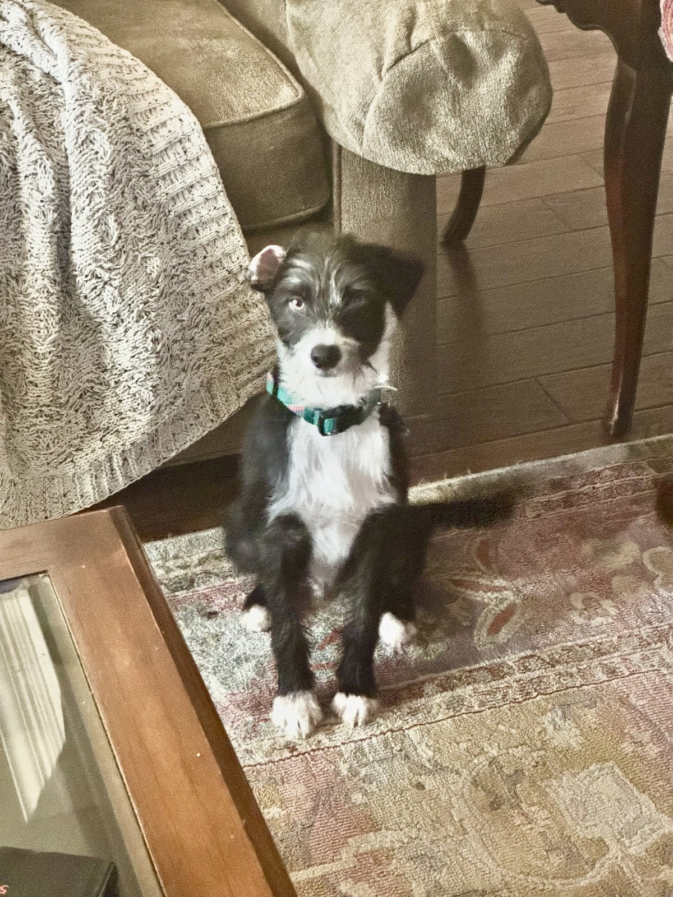

BA schnoodle of distinguished scruff.
Thank you for stopping. I am friendly, I love everyone, and I am probably a little lost. Please email my human, Gus, and tell him where I am. He will come get me right away.
Email GusI am also microchipped, so any vet or shelter can scan me.
I am Bart, short for Bartholomew. My human goes by Gus, short for August, so we are both men of grander names who prefer to keep things casual.
I came to Madisonville in October 2026, adopted through Dante's Hope rescue in Baton Rouge. I am told I am a schnauzer and standard poodle mix. I am also told I will get bigger. I intend to.
My hobbies include truck rides, YouTube TV (ducks and dogs, specifically), being pet, and rolling in the grass until I am filthy. I have a soft spot for the ladies.
| Date | Weight | Notes |
|---|---|---|
| Oct 20, 2026 | 16.4 lbs | Shelter intake. A humble beginning. |
| Oct 21, 2026 | 17.1 lbs | 13 weeks old. Already thriving. |
| Nov 2, 2026 | 18.8 lbs | 15 weeks old. Gaining on schedule. |